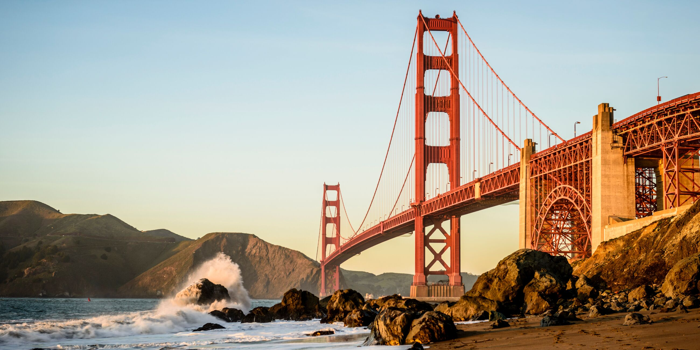
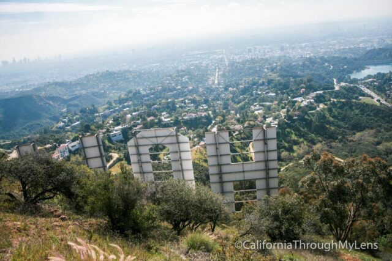
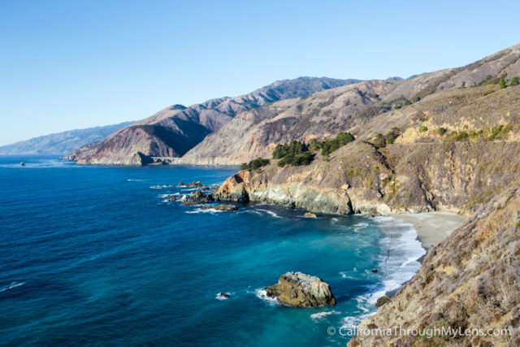
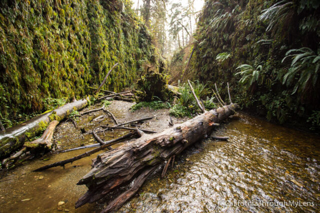
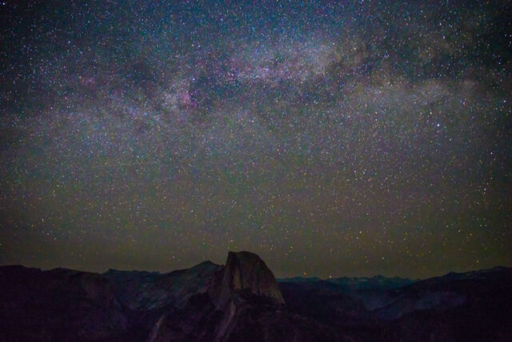
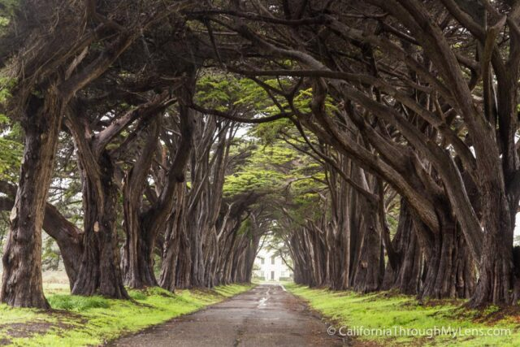

ABOUT CALIFORNIA
The name California comes from a 16th-century Spanish novel that describes a mythical paradise called California. The gold rush probably helped earn California the nickname the Golden State, as did its golden poppies, the state flower.

Theme Parks
From Disneyland Resort classics to behind-the-scenes experiences at SeaWorld San Diego to preschooler-friendly rides at LEGOLAND California, the Golden State’s best-in-class theme parks deliver something for everyone. Take a tram ride to tour movie back lots at Universal Studios Hollywood, or ride on a beachfront carousel in Santa Cruz. Looking for a vertigo-inducing roller coaster? You can find them up and down the state. See what’s in store at these family fun-zones, with insider tips on new rides, timeless favorites, and the amazing entertainment.
Disneyland Resort
The two theme parks—the original Disneyland Park and the adjacent Disney California Adventure Park—are each
divided up into themed “lands” with related rides, shows, and dining, as well as plenty of strolling characters.
In Disneyland Park, Sleeping Beauty Castle provides the unmistakable landmark of the fairytale-themed Fantasyland,
but the four other original lands (Tomorrowland, Adventureland, Frontierland, and Main Street, U.S.A.) feature their
own classic attractions such as the Jungle Cruise, Autopia, and Thunder Mountain. Deeper in the park are more “lands”
and don’t-miss rides, including Pirates of the Caribbean and the Haunted Mansion, both in New Orleans Square, and
Mickey’s Toontown, which offers interactive experiences, ready-for-relaxation green spaces, and the Mickey & Minnie’s
Runaway Railway. One of the newer additions is Tiana's Bayou Adventure; the flume log ride used to be Splash Mountain
and is an extension of New Orleans Square in the area now known as Bayou Country. Toward the back of the park is Star
Wars: Galaxy’s Edge, where you might see a strolling Darth Vader or the Mandalorian, and you can experience immersive
rides such as Smugglers Run: Millennium Falcon.
Adjacent to Disneyland Park, Disney California Adventure Park draws on the Golden State for inspiration, from the
Route 66 vibes in Cars Land to the movie-themed attractions in Pixar Pier to the diverse food in San Fransokyo Square.
Marvel Comics fans won’t want to miss the Avengers Campus, the park’s superhero-themed land with plenty of Marvel
character sightings and thrills including Web Slingers: A Spider-Man Adventure and the freefall ride Guardians of the
Galaxy—Mission: Breakout!
LEGOLAND California
While most of the rides at the Carlsbad theme park are geared toward grade-school or preschool-aged kids,
anyone who loves LEGO will find plenty of fun here.
Start at the section of the park that put it on the map when it opened in 1999: Miniland USA showcases a
jaw-dropping expanse of miniaturized LEGO recreations of global cities, from Washington D.C. to Sydney.
You could spend hours studying the details, from Los Angeles’ SoFi Stadium to the tiny LEGO people going
to Comic-Con in downtown San Diego. Fun fact: The LEGO replica of New York City’s Freedom Tower is the
tallest LEGO building in the country.
Beyond Miniland, the park is home to roller coasters, shows, and attractions, with different areas of the
park devoted to themes such as The LEGO Movie, pirates, adventurers, and Ninjago. Longtime favorite rides
include the Fun Town area’s Driving School—where kids get behind the wheel of electric LEGO cars and are
awarded driver’s licenses afterward (little ones aged 3 to 5 have their own Junior Driving School); The
Dragon roller coaster; and Ninjago: The Ride, where you wave your hands in front of sensors to earn points
against ninja foes.
Fans of the LEGO movie series will love THE LEGO MOVIE WORLD. This dedicated area features characters,
attractions, and rides inspired by the films, including the Build Watevra You Wa’na Build play zone, a
recreation of Emmet’s apartment, and Emmet’s Flying Adventure Ride, where you sit on a Triple Decker Flying
Couch and immerse yourself in the sights and sounds of the LEGO movies within a full-dome virtual screen.
SeaWorld San Diego
Located just off Mission Bay in San Diego, the park offers a variety of ways to both celebrate marine life and learn about conservation efforts around the world. Start your visit at the Explorer’s Reef area, just inside the park’s entrance, lined with touch pools, then see marine life up close at exhibits such as the popular Dolphin Point. Head to Turtle Reef to view loggerhead, hawksbill, and green sea turtles, plus thousands of tropical fish. Then go to Shark Encounter and walk through a 57-foot acrylic underwater tunnel—you’ll be surrounded by several species of sharks swimming in a 300,000-gallon lagoon. Be sure to take the five-minute ride up the Skytower, a 320-foot column that overlooks the whole park. And don’t miss the immersive Jewels of the Sea: Jellyfish Experience, which opened in 2025. Outside, check out the signs detailing fun facts about jellyfish (for instance, they literally lack brains) then head inside to see the ethereal creatures bobbing around exhibits in three galleries, including an 18-foot-tall jelly cylinder and a globe that you can touch.
Things to Do in California
Hike to Hollywood Sign
There are few things more iconic in California then the famous Hollywood Sign. Hiking to it is a rite of passage for many a Southern California hiker, and while you can’t get that close to it, you can still look down on this icon with the city of Los Angeles behind it, making it a must do in the state.

Drive the Big Sur Coastline
The Big Sur coastline has been inspiring people for centuries with its rugged mountains that lead right down to picturesque beaches. Make sure you have a few days to explore though as there is so much to see.

Get Your Feet Wet at Fern Canyon
One of California’s best and easiest hikes, Fern Canyon in Northern California was a spot used in the filming of Jurassic Park, The Lost World. If that doesn’t tell you how beautiful it is then just remember this movie was supposed to take place on a tropical island. It is one of those hikes you won’t forget.

Stargaze at Glacier Point
There are lots of great places for dark night skies in California, but my favorite is Glacier Point in Yosemite. There is just something about watching the sunset fade over half dome and then seeing the stars light up the sky behind it that is just magical to me.

Walk the Cypress Tree Tunnel in Point Reyes
Sure you have seen this on one of your favorite photographer’s Instagrams, but have you thought about visiting yourself? It is such an easy spot to get to a you literally just drive up. The pictures are just incredible with the old cypress grove seeming to close in on you as you walk the road.
